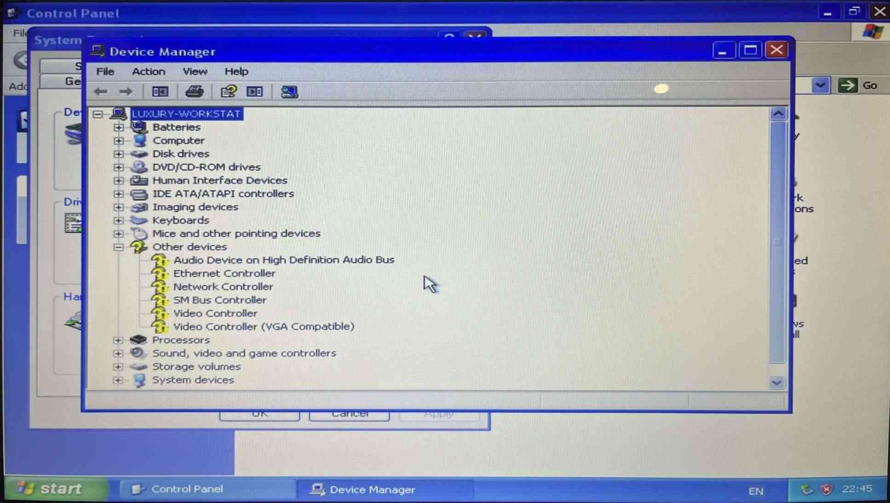
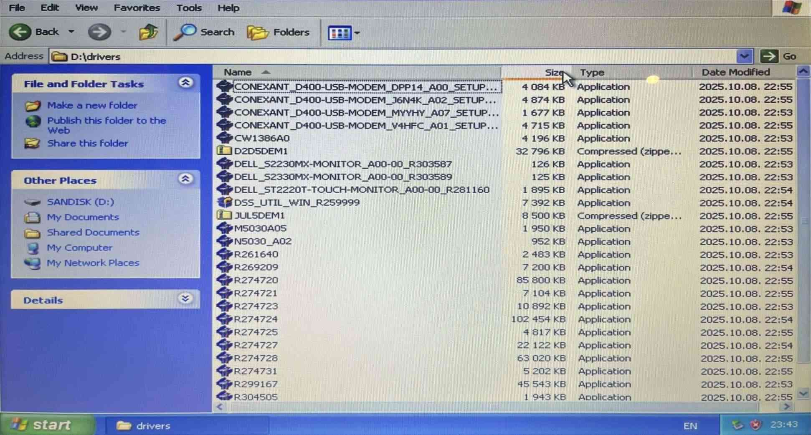
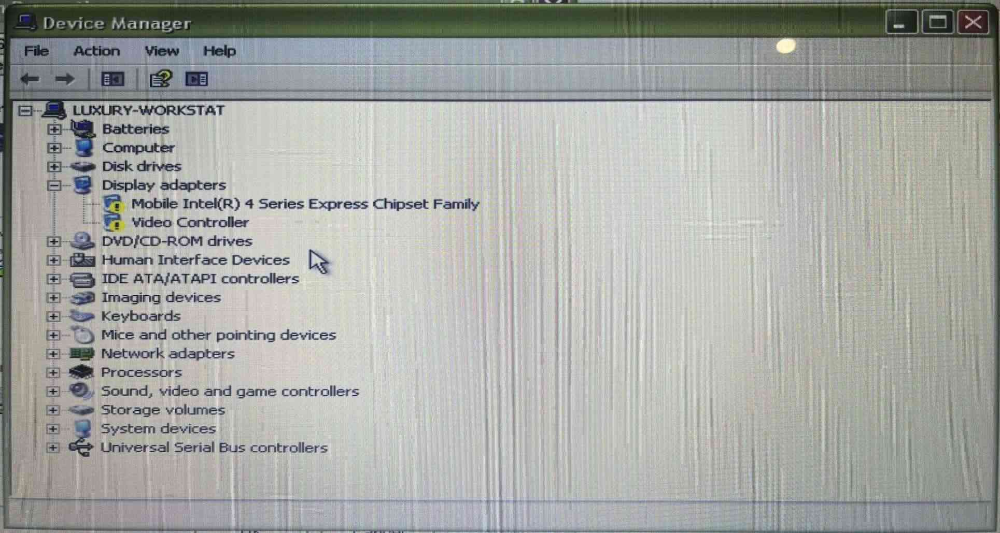
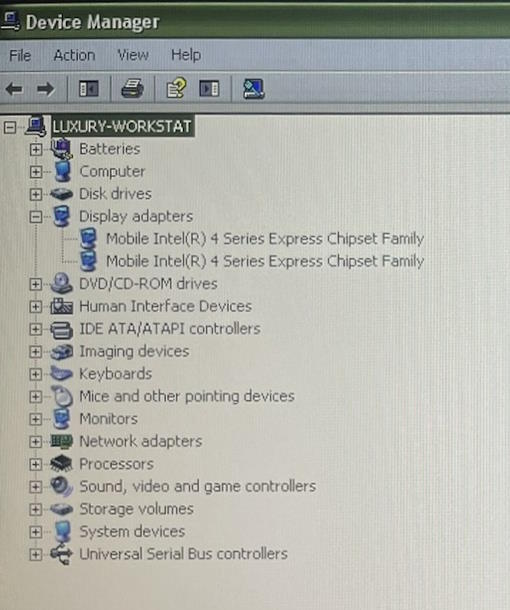
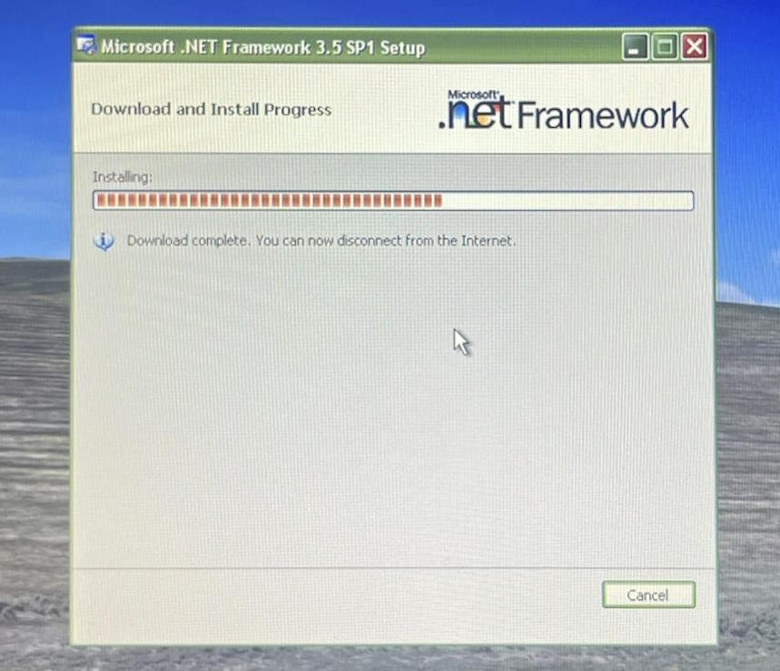

Driveru uzstādīšana
Draiverus visus lejupielādēju no Dell mājaslapas palīdzības sadaļas, kur, brīnumainā kārtā, tie bija pieejami šim datoram. Instalācija draiveriem gāja perfekti, izņemot grafikas draiveri, kurš sūdzējās par Windows versiju.
Tomēr sanāca atrast no kādas mājaslapas draiveri Intel GMA 4500MHD tieši 32-bitu Windows XP, un to instalējot, sanāca uzstādīt pilnīgi visu datorā.
Pēc Microsoft .NET Framework 3.5 SP1 instalēšanas (pēdējā, kas pieejama uz XP) sanāca arī izmantot Intel grafiku iestatījumu paneli.
Vienīgi nolēmu neinstalēt BIOS atjauninājumos, jo nevēlējos kaut kādā veidā pilnībā iznīcināt datoru.




